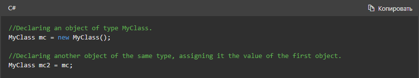
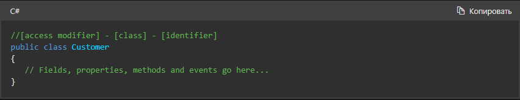
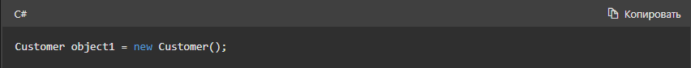
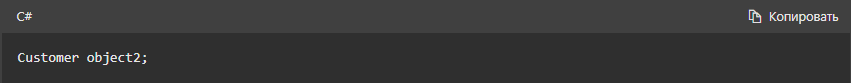
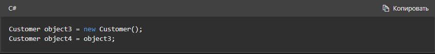
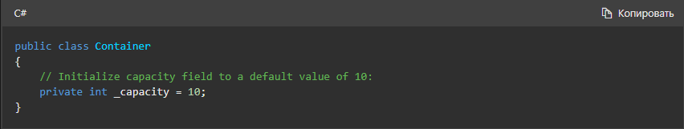
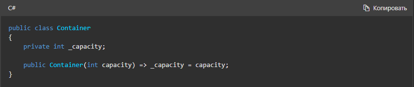
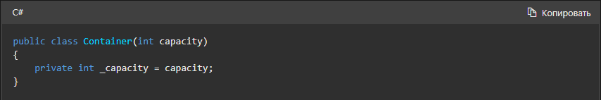
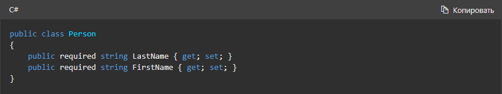

Общие сведения о классах
В этой статье
Ссылочные типы
Тип, определенный как , class является ссылочным типом. Во время выполнения при объявлении
переменной ссылочного типа переменная содержит значение null , пока вы явно не создадите
экземпляр класса с помощью new оператора или не назначите ему объект
совместимого типа, который
может быть создан в другом месте, как показано в следующем примере:

При создании объекта выделяется достаточный объем памяти для этого объекта в управляемой куче, и переменная
хранит только ссылку на расположение данного объекта. Память, используемая объектом, освобождается с помощью
функции автоматического управления памятью среды CLR, которая называется сборкой мусора. Дополнительные
сведения о сборке мусора см. в разделе Автоматическое управление памятью и сборка
мусора.
Объявление классов
Классы объявляются с помощью class ключевое слово за которым следует уникальный
идентификатор,
как показано в следующем примере:

Дополнительный модификатор class доступа предшествует ключевое слово. Так
как public используется в этом случае, любой пользователь может создавать экземпляры этого
класса. За именем класса следует ключевое слово class. Имя класса должно быть допустимым именем идентификатора C#. Оставшаяся часть определения — это тело класса, в котором задаются
данные и поведение. Поля, свойства, методы и события в классе собирательно называются членами класса.
Создание объектов
Хотя они иногда используются взаимозаменяемо, класс и объект — это разные вещи. Класс определяет тип объекта,
но сам по себе он не является объектом. Объект — это конкретная сущность, основанная на классе, которую
иногда называют экземпляром класса.
Объекты можно создать с помощью new ключевое слово за которым следует имя класса, как показано
ниже:

При создании экземпляра класса ссылка на объект передается программисту. В предыдущем примере
object1 представляет собой ссылку на объект, который основан на Customer. Эта
ссылка ссылается на новый объект , но не содержит сами данные объекта. Фактически, можно создать ссылку на
объект без создания собственно объекта:

Не рекомендуется создавать ссылки на объекты, которые не ссылаются на объект, так как
попытка получить доступ
к объекту через такую ссылку завершается сбоем во время выполнения. Ссылку можно сделать для ссылки на
объект, создав новый объект или назначив ему существующий объект, например:

В этом коде создаются две ссылки на объект, которые указывают на один и тот же объект. Таким
образом, любые
изменения объекта, выполненные посредством object3, отражаются при последующем использовании
object4. Поскольку на объекты, основанные на классах, указывают ссылки, классы называют
ссылочными типами.
Конструкторы и инициализация
В предыдущих разделах представлен синтаксис для объявления типа класса и создания экземпляра
этого типа. При
создании экземпляра типа необходимо убедиться, что его поля и свойства инициализированы полезными
значениями. Существует несколько способов инициализации значений.
- Принятие значений по умолчанию
- Инициализаторы полей
- Параметры конструктора
- Инициализаторы объектов
Каждый тип .NET имеет значение по умолчанию. Как правило, это значение равно 0 для
числовых типов и
null для всех ссылочных типов. Вы можете использовать это значение по умолчанию, если это
целесообразно в приложении.
Если значение по умолчанию .NET не является правильным, можно задать начальное значение с
помощью
инициализатора поля:

Вы можете потребовать, чтобы вызывающие стороны предоставляли начальное значение, определив конструктор ,
который отвечает за установку этого начального значения:

Начиная с C# 12, можно определить основной конструктор как часть объявления класса:

Добавление параметров в имя класса определяет основной конструктор. Эти параметры доступны в
теле класса,
который включает его члены. Их можно использовать для инициализации полей или в любом другом месте, где они
необходимы.
Вы также можете использовать модификатор required для свойства и разрешить вызывающим объектам
использовать инициализатор объекта для задания начального значения свойства:

По контейнеру
Начиная с C# 12, можно определить основной конструктор как часть объявления класса:
Добавление параметров в имя класса определяет основной конструктор. Эти параметры доступны в теле
класса,
который включает его члены. Их можно использовать для инициализации полей или в любом другом месте, где они
необходимы.
Вы также можете использовать модификатор required для свойства и разрешить вызывающим объектам
использовать инициализатор объекта для задания начального значения свойства:
Начиная с C# 12, можно определить основной конструктор как часть объявления класса:
Добавление параметров в имя класса определяет основной конструктор. Эти параметры доступны в теле
класса,
который включает его члены. Их можно использовать для инициализации полей или в любом другом месте, где они
необходимы.
Вы также можете использовать модификатор required для свойства и разрешить вызывающим объектам
использовать инициализатор объекта для задания начального значения свойства:
Go back to top